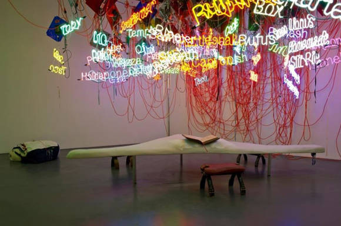
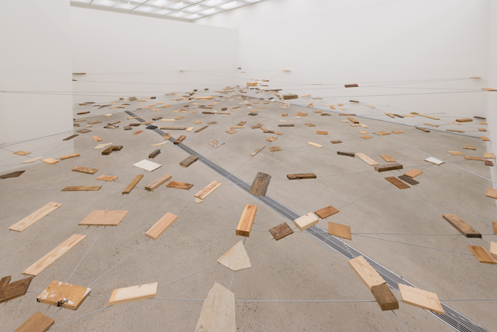
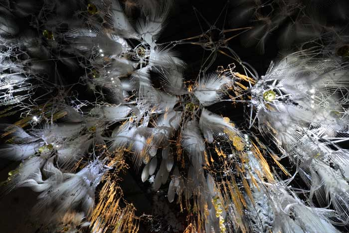
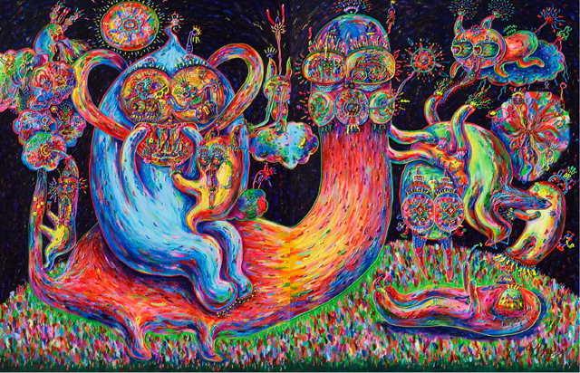
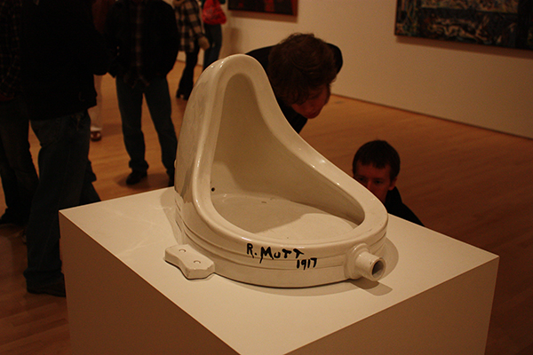

현대미술
현대미술은 보통 1970년대부터, 길게 잡으면 1950년대부터 현재까지의 미술을 일컫는다.



"With art for a while"
현대미술은 보통 1970년대부터, 길게 잡으면 1950년대부터 현재까지의 미술을 일컫는다.
현대미술 이전의 미술의 간절한 꿈은 눈 앞의 현실을 있는 그대로, 사실적으로 나타내는 것이었던 반면 현대미술에서는 작가의 주관적인 느낌이나 감성을 표현하는 것을 더 중요시한다. 현대미술은 개성을 중시하기 때문에 사실보다는 감성과 느낌을 바탕으로, 때론 과장하여 표현한다.[심은솔 - 관계]
흔히 현대예술의 해체적이고 전복적인, 전위적인 특성 등등으로 설명되는 것입니다. ‘날 이해시킬 수 없고 감동을 줄 수 없으면 예술이라고 볼 수 없어! 예술 감상은 주관적인 거잖아?’라고 심술을 내기 딱 좋은 예. [Marcel Duchamp - Fountain]
